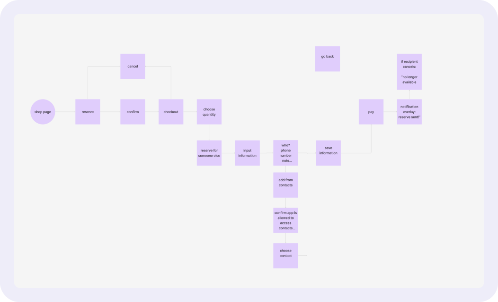
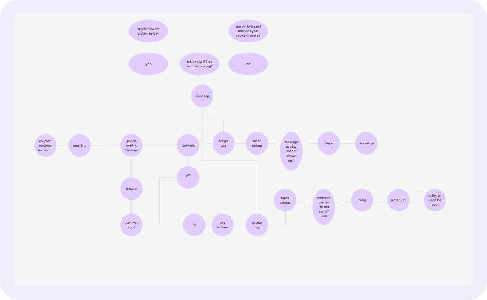

Too Good To Go Gift a Bag Feature
Share the love. Save the planet.
Feature Design Project

Too Good To Go is an app that helps reduce food waste by allowing users to buy surplus food at a discount.
PROJECT OVERVIEW
The project focused on designing a "Gifting" feature, allowing users to buy and send Surprise Bags to others.
We asked ourselves how might we design a thoughtful experience for users to purchase a Surprise Bag for someone else, while maintaining a smooth and consistent experience?
THE PROBLEM
Too Good To Go helps reduce food waste by allowing users to purchase surplus food at a discount. The built-in way to gift meals to others was not clear for users, making it difficult for users to share the experience with friends or donate meals to those in need. There was no clear process for how a gifted meal would be redeemed, leading to confusion and reducing the likelihood of users engaging in gifting.
THE SOLUTION
To address this, we designed a "Gift a Bag" feature, enabling users to seamlessly send Surprise Bags to friends or donate them to community members in need. The new flow allows users to select a meal, choose a recipient, and include a personalized message. To ensure clarity, the feature provides two options: a direct transfer, where the recipient receives a notification and claim instructions, or a donation mode, where meals are pooled for distribution by partner organizations. By integrating gifting into the app, this solution removes friction from the process, encourages users to share meals more frequently, and enhances the app’s impact on food waste and community support.
TIMELINE
October - December
2024
RESPONSIBILITIES
User Research
UX Design
Wire Framing
TOOLS
Figma & Figjam
Teams
Zoom
THE PROCESS
DEFINE
At the start of our research, we focused on sustainability, food insecurity, and user behaviour around food waste reduction.
Our initial questions explored:
- How do people perceive food waste, and what actions do they take to reduce it?
- How aware are users of food insecurity, and do they feel empowered to help?
- What motivates people to use Too Good To Go beyond just saving money?
RESEARCH
Before designing, the research aimed to:
- Understand how users currently share or gift meals from Too Good To Go.
- Identify barriers preventing users from gifting meals.
- Explore motivations behind sharing meals (e.g., social, charitable giving).
To gather insights, we used the following methods:
- User Interviews – Conducted interviews with Too Good To Go users to understand their behaviours and experiences with meal sharing.
- Surveys – Distributed a short survey to collect broader feedback on whether users would be interested in gifting and their expectations.
- Competitive Analysis – Examined how other food-related apps (e.g., Uber Eats, DoorDash, Starbucks) handle gifting and what UX patterns they use.
INSIGHTS
Users Want to Share the Experience but Lack an Easy Way to Do So
Many users expressed interest in gifting meals to friends or donating to those in need but found the lack of an in-app option frustrating.
Clarity & Transparency Are Crucial for Gifting
Users were uncertain about how a gifted meal would be redeemed and whether recipients needed a Too Good To Go account.
Social & Community Impact Motivates Users
Some users weren’t just interested in gifting to friends but also wanted to donate meals to food-insecure individuals.
A Simple, Familiar Flow Increases Adoption
Users preferred a step-by-step process similar to online gifting (e.g., choosing a meal, selecting a recipient, adding a message).
A Simple, Familiar Flow Increases Adoption
Users preferred a step-by-step process similar to online gifting (e.g., choosing a meal, selecting a recipient, adding a message).
DESIGN PROCESS
We started by working on some possible flow charts of how a user would send a bag to someone else, as well as how the recipient would be able to claim their gifted bag.
Gifting a Bag Flow
Claiming a Bag Flow
Sending a Bag Mockup

Donating a Bag Mockup

LEARNINGS
Through this project, I gained valuable insights into how users approach gifting within food-related apps and the challenges they face when trying to share meals.
The "Gift a Meal" feature bridges a gap in Too Good To Go’s user experience by making meal sharing effortless and meaningful. By integrating both direct gifting and donation options, the feature supports Too Good To Go’s core mission while increasing user engagement. This project reinforced the importance of designing with empathy, ensuring that every decision improves usability while aligning with user motivations.